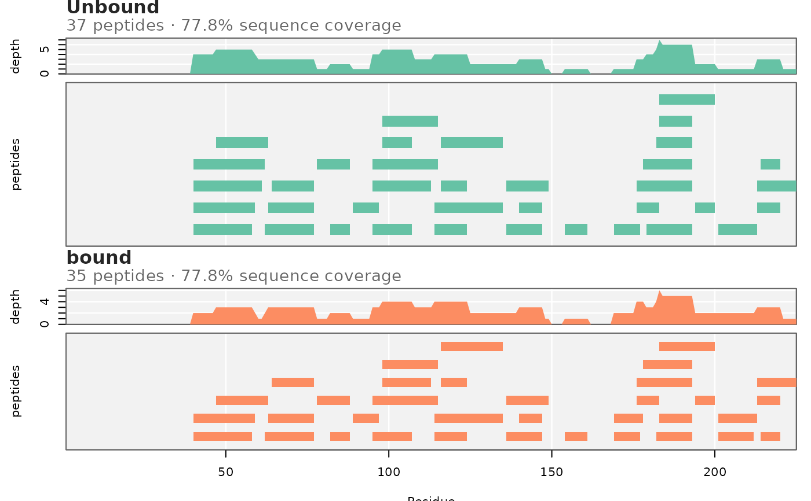
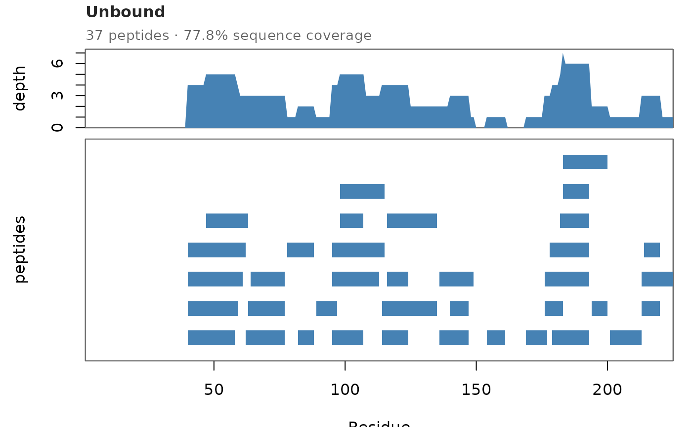

Plot peptide coverage map with per-residue redundancy
Source:R/plot_peptide_coverage_map.R
plot_peptide_coverage_map.RdThe classic HDX-MS QC figure that this package didn't have a plotting
function for yet: general_info() already reports peptide coverage %,
peptide count, and mean redundancy as single numbers per state, but a
number can't show where a coverage gap is or which residues are
over/under-represented - only a map can. For each state, draws two
aligned panels sharing one residue axis: a per-residue redundancy strip
(how many peptides cover each residue - built from coverage_residue())
above a peptide map (one block per unique peptide, positioned at its
Start-End span, stacked into just enough rows to avoid overlap).
Usage
plot_peptide_coverage_map(
filepath,
states = NULL,
palette = "Set2",
bg = "grey95",
grid_col = "white",
show_grid = TRUE,
row_gap = 1,
block_height = 0.5,
block_border = NA,
cex_main = 1,
font_family = ""
)Arguments
- filepath
filepath to the input file (read via
all_data_long_input()).- states
character vector of states to show, one redundancy+map panel pair per state, stacked top to bottom on a shared residue axis. Default
NULLuses every state found infilepath.- palette
either a single
RColorBrewerqualitative palette name (default"Set2") or an explicit vector of colors, one per state (or more; the firstlength(states)are used).- bg
panel background color (the shaded area behind the gridlines and data). Default
"grey95"; use"white"for a plain white panel.- grid_col
gridline color drawn over
bg. Default"white".- show_grid
logical; draw the shaded background/gridlines at all. Default
TRUE; setFALSEfor a plain white panel with no grid.- row_gap
minimum residue gap enforced between two peptides placed in the same map row - visual spacing only, does not affect the redundancy strip. Default
1.- block_height
height of each peptide block as a fraction of one row (
0-1). Default0.5- leaves visible spacing between rows.- block_border
border color for peptide blocks, or
NAfor no border. DefaultNA.- cex_main
text size for each state's title line (state name, peptide count, percent sequence coverage). Default
1.- font_family
font family passed to text-drawing calls (titles, axis labels). Default
""(device default).
Details
Peptide identity here is Start/End/Sequence, deduplicated across
every Deut.Time and replicate for that state (a peptide's identity
doesn't change across timepoints, only whether it was successfully
quantified there) - so this shows what was identified for a state, the
same question compare_states_unmatched()'s coverage/
plot_coverage_diagnostics() ask numerically. Comparing two states'
panels side by side (same x-axis) is a direct visual check of exactly
the confound that function's frac_shared_all_states warns about: a gap
in one state's map that isn't a gap in another's marks where an unmatched
comparison could be measuring peptide-map differences, not biology.
Examples
# \donttest{
file_nm <- system.file("extdata", "All_results_table.csv", package = "HDXBoxeR")
plot_peptide_coverage_map(file_nm)

plot_peptide_coverage_map(file_nm, states = "Unbound", palette = "steelblue", bg = "white")

# }